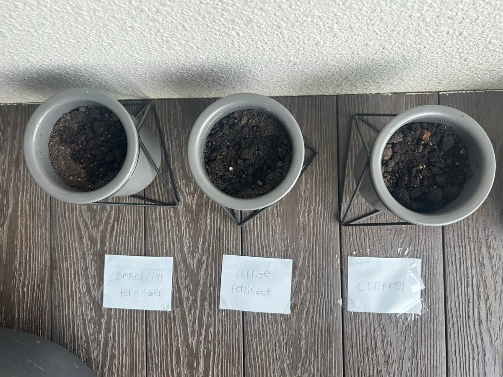
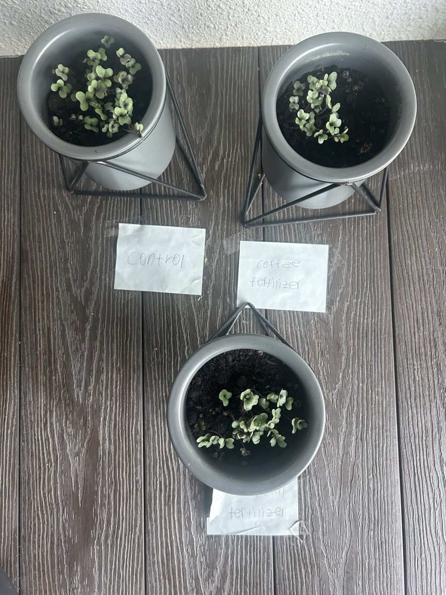
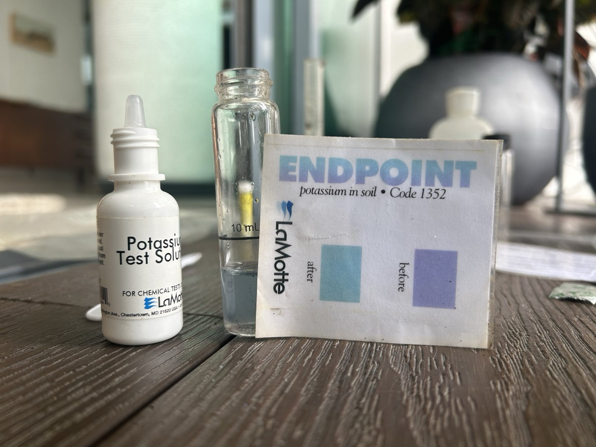
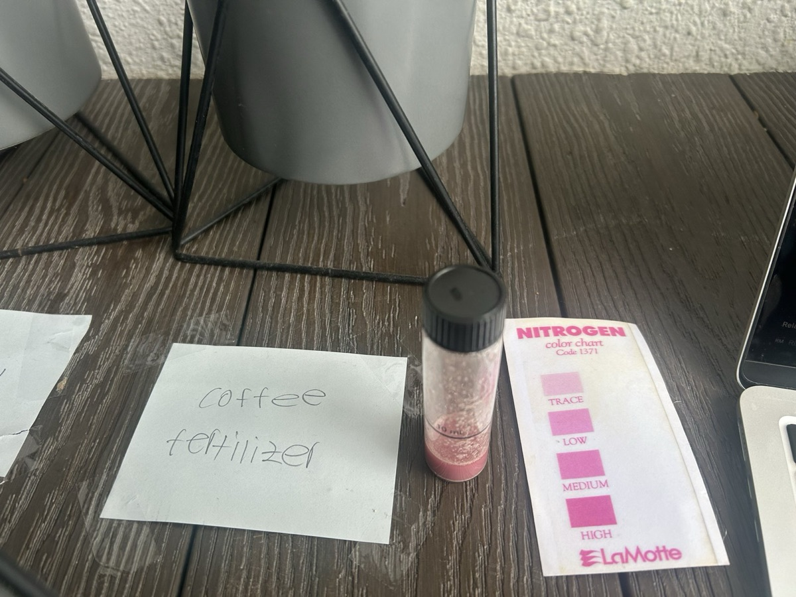
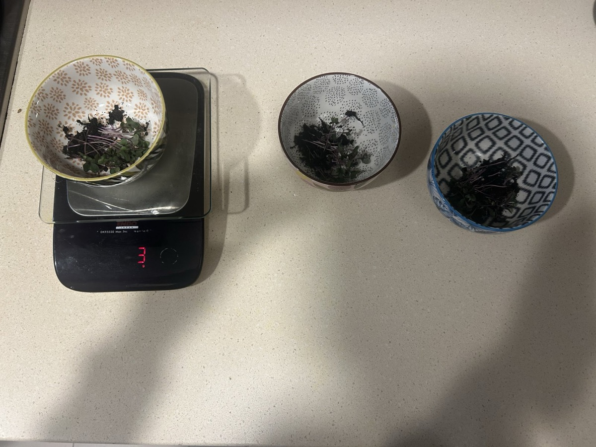

Research
Questions I keep chasing.
Should we fear a cashless society? Why does a crossed-out price change what we're willing to pay? How does bias get into AI? Do coffee grounds really help plants grow? I like turning questions like these into essays, infographics, and experiments.
The coffee-ground experiment
Now researching · Gold CREST Award
Does a liquid coffee-ground fertilizer raise soil nutrients and help plants grow?
EcoBean's fertilizer seemed to work in testing, but I wanted to know whether it really did, and why. Run 1 grew mold in plastic cups and Run 2's seeds never sprouted. Run 3 used proper pots with drainage, fresh red cabbage seeds, and a third pot with store-bought fertilizer to compare against.
Same soil, 2 g of seeds and 30 mL of water a day per pot. I tested the soil with LaMotte nitrogen, phosphorus, and potassium kits, and my parents read the colour tests without knowing which sample was which.
Run 3 results
| Control | Coffee | Store-bought | |
|---|---|---|---|
| Nitrogen (Day 6) | Low–medium | Medium | High |
| Phosphorus (Day 6) | Trace | Low | Trace |
| Potassium (Day 6) | 9 drops | 6 drops | 8 drops |
| Microgreens (Day 8) | ~48 | ~26 | ~32 |
| Harvest mass | 5 g | 3 g | 3 g |
Potassium: fewer drops to the endpoint means more potassium. All three read "high".
So the control won?
The coffee fertilizer did raise nitrogen, phosphorus, and potassium above the control, but the control still grew the most. It sat in more sunlight until I rotated the pots on Day 5, and eight days may be too short for extra nutrients to show up as growth. The Gold CREST project is my chance to find out: longer runs, more pots, and the chemistry behind it.





- 2025 · EcoBeanThe first testMixing grounds straight into soil grew mold, so we switched to a coffee-ground "tea" fertilizer.
- May 2026 · AP ChemistryThe chemistryWith my partner Liam, I traced the effect to nutrients, pH, equilibrium, and decomposition kinetics.
- Now · Gold CREST AwardThe full projectAround 70 hours of research, testing, and a written report, assessed against the CREST Gold criteria.
Why coffee grounds might help
- NutrientsUsed grounds carry nitrogen, phosphorus, and potassium, plus traces of calcium, magnesium, and iron.
- Gentle pHBrewing pulls most of the acid into the drink, so used grounds sit near neutral (about 6.5–6.8).
- Slow releaseSoil microbes break the grounds down and release ammonium; as roots absorb it, equilibrium shifts to release more.
- Don't overdo itCaffeine at high concentrations can stop seeds germinating, so the dose matters.
What I've written
- John Locke Institute · 2026Should we fear a cashless society?Read the essay
Economics essay, awarded a Commendation in the Global Essay Prize. A fully cashless society is worth fearing for privacy, access, and resilience, but the move to digital payments should continue.
- AT Psychology · 2025Why do price tags trick us?Read the paper
A survey experiment with SAS students and teachers: random price anchors swayed both groups' willingness to pay, and experience barely helped the adults.
- AT Psychology · 2026How do biases get into AI?View it
An infographic on where AI bias forms (systems, input, and application) and how it can be reduced. After my final presentation, I was invited to speak at SAS's Human+ conference in early 2027.
- Science Centre Singapore · 2026Can AI save more energy than it consumes?Read the article
AI's growing energy use, and how Singapore is using AI to cut air-conditioning demand. Submitted to Science Centre Singapore's Void Deck magazine; not yet published.